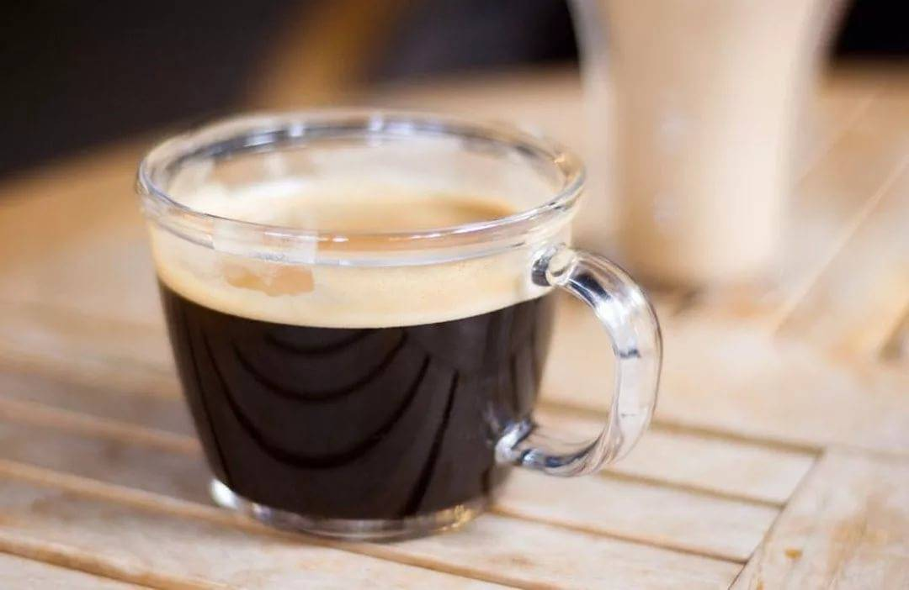

{% extends 'base.html' %}
{% block title_page %}
Рецепт Лунго
{% endblock %}
{% block name_of_coffee %}
Лунго
{% endblock %}
{% block image_coffee %}

{% endblock %}
{% block ol_recipe %}
Рецепт приготовления в кофеварке:
Обжариваем чайную ложку кофейных зерен.
Перемалываем их в кофемолке около 20 секунд - до крупного помола.
Насыпаем 7-10 граммов кофе (это чуть меньше чайной ложки) в рожок кофеварки
Наливаем 70-100 мл воды в специальный отсек
Ждем, пока прокапается вся вода
Прогреваем толстостенную кружку, налив в нее крутой кипяток и оставив на пару минут
Выливаем из кружки кипяток и наливаем кофе. При желании, в напиток можно добавить сахар и молоко.
{% endblock %}
{% block table_of_propor %}
| Кофе |
Вода |
| 7 - 9 г |
60 - 120 мл |
{% endblock %}